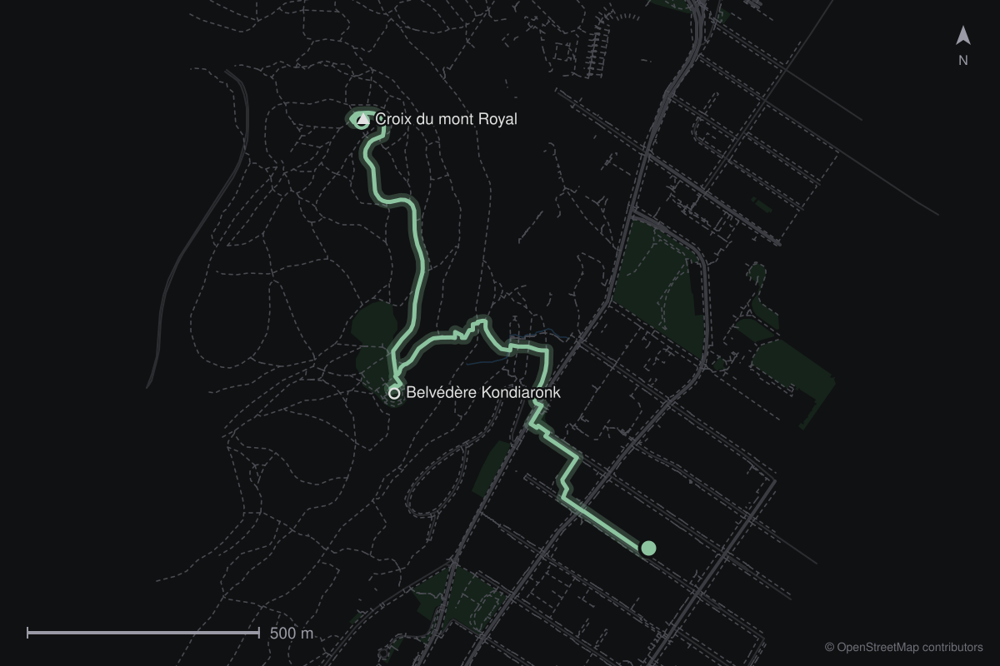
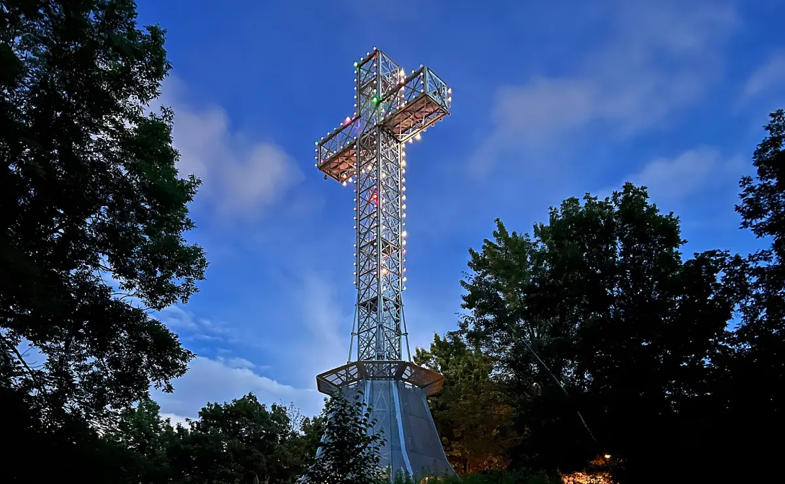
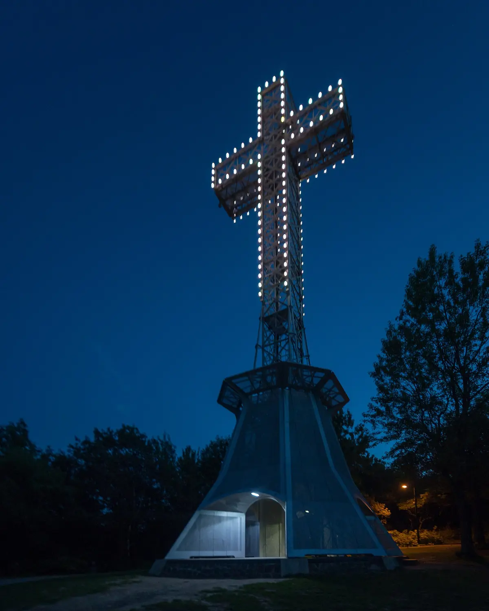
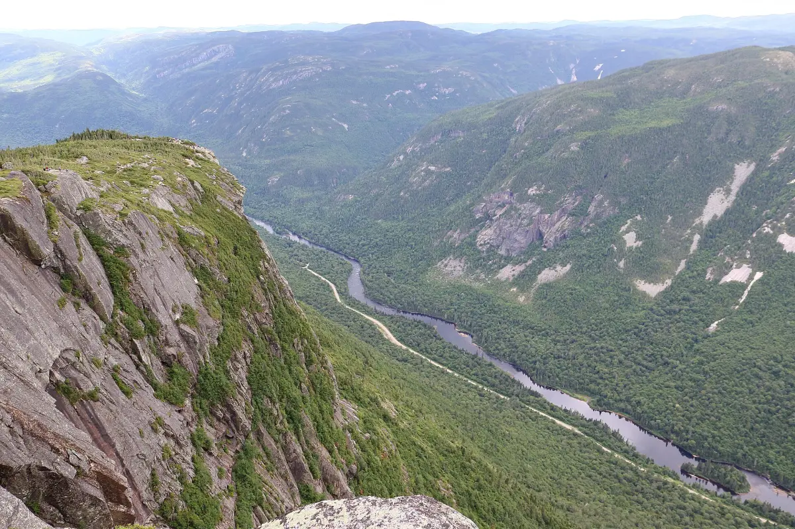

Mount Royal, up to the Kondiaronk lookout
Last updated: November 21, 2026
The mountain in the middle of the city: from downtown, a short climb through the woods of the park designed by Frederick Law Olmsted to the most famous view of Montréal.

- Distance
- About 1.4 km from the top of rue Peel to the lookout, about 2 km to the cross
- Elevation gain
- About 150 m
- Time
- 1 to 1 h 30 return
- Difficulty
- Easy to moderate, with stairs if you take the shortcut
- Start
- Top of rue Peel, at avenue des Pins
- Season
- All year
Map

Elevation profile

The route
From the top of rue Peel, cross avenue des Pins and take the path up into the woods. It joins Chemin Olmsted, the wide gravel road that winds gently up the mountain, laid out by Frederick Law Olmsted, the landscape architect of New York’s Central Park.
A staircase cuts straight up the escarpment to the Kondiaronk lookout, in front of the Mount Royal Chalet: downtown at your feet, the river and, on a clear day, the hills of the Montérégie. The lookout is named after Kondiaronk, the Wendat chief who helped bring about the Great Peace of Montréal in 1701.
Keep going on the summit loop to the Mount Royal cross, lit up every night above the city, then come back down the same way or by Chemin Olmsted.
Good to know
- Stairs or switchbacks. The stairs are quick but steep; Chemin Olmsted is longer and gentle.
- At dusk. The city lights from the lookout are worth the walk. Bring a light for the woods.
- Winter. The paths can be icy: crampons or ice cleats help.
- Shared park. Stay on the paths to protect the mountain’s woods.
Photos




Keep the day with Arpente
Tap record at the start and put your iPhone in your pocket. Arpente draws your route and measures the distance, time and elevation gain, even with the screen off. Add a photo and a note, and the outing stays in your journal. Discover Arpente.
Other outings
 Mont Albert11.6 km return by the north side, or a 17.3 km loop
Mont Albert11.6 km return by the north side, or a 17.3 km loop
Acropole des DraveursAbout 10.4 km return to the first summit, 11.2 km to the third Sentier de la StatueAbout 7.6 km return, or 3.6 km return to the Bellevue lookout
Sentier de la StatueAbout 7.6 km return, or 3.6 km return to the Bellevue lookout Lachine Canal14.5 km one way, from the Old Port to Lachine
Lachine Canal14.5 km one way, from the Old Port to Lachine
The route on the map is indicative, computed with BRouter on OpenStreetMap data (© OpenStreetMap contributors, ODbL); elevations from SRTM. It doesn’t replace the park’s official map. Distances, elevation and times in the table come from park sources: check conditions before you go.